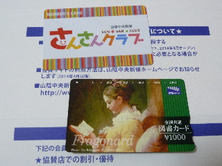

さんさんクラブに入りました。
2014/04/05
山陰中央新報の「さんさんクラブ」に入会しました。

山陰中央新報をとっているので、図書カード1000円もいただきました。
新聞読んでいる人は入会するといいですよ。
カード来たので、ホームページで会員特典をホームページでチェックしました。
懸賞があったので、メールで応募しときました。
当たるといいな。
さんさんクラブのホームページはこちら
http://ww2.sanin-chuo.co.jp/
山陰中央新報
さんさんクラブ事務局
〒690-8668 松江市殿町383 中央ビル1階
大田市で工場見学と社員食堂で食事ができる！
2013/10/13
みちくさ日和（大田市・美郷町を満喫する秋の体験プログラム2013）ってサイトが出来ているんですが、気軽に出来そうなプログラムが沢山ありました。
その中で、「社員食堂潜入!!イワミ村田製作所」が目を引きました。
工場見学と社員食堂で食事が出来ます。
工場見学も面白そうですが、社員食堂に行ってみたいなー。
どんなメニューなんだろう？
私は社員食堂のない会社務めなので、そうゆうのちょっと憧れるなー。
ムラタセイサクくん・セイコちゃんにも逢えるみたいです。
色々あって楽しそうですね。
詳しくはみちくさ日和のホームページでどうぞ
http://michikusaohda.jp/
リメンバーしまねで大量プレゼントです。
2013/10/10
リメンバーしまねhttp://www.re-member.jp/が5周年と、応援団員2万人記念で101人に和菓子の笑小巻（えみこまき）プレゼントです。
団員の方は忘れずに応募しましょう。
団員じゃない人は団員になって応募しましょう。
締め切りは11/10です。
シェアなび（観光イベントシェアサービス）が気になるー。
2013/10/07
シェアなびってホームページがあるんですが、そこのツアーで
初めてだけど行ってみたい女子旅「神迎祭神事ツアー」っていうのに
1人応募がありました。
シェアなびのリンクはこちら
http://share-navi.com/
最小開催人数が10人なので、あと9人応募がなければ中止です。（たぶん）
開催されるといいですねー。なんて思いながら見ていました。
出雲大社の遷宮後最初の神迎え神事なので、沢山応募があっても良さそうなんですけど...
あんまりこのサイトの知名度なさそうだもんな...
気になった人はリンクを見てみてください。
他にも島根の楽しそうな色々ありますよ。
シェアなびのリンクはこちら
http://share-navi.com/